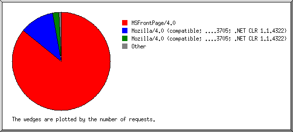
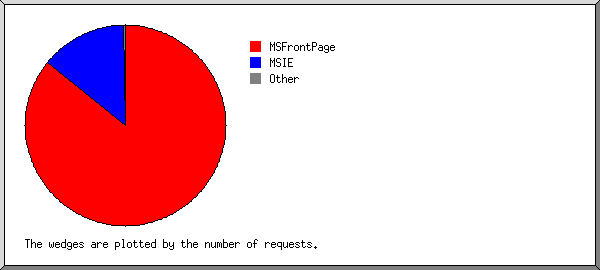
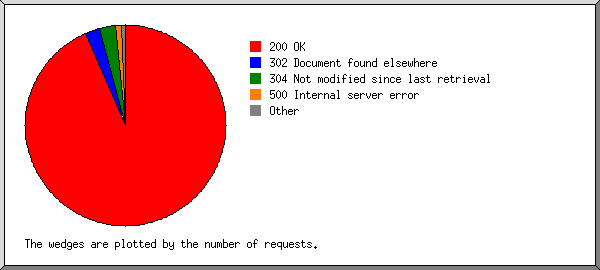
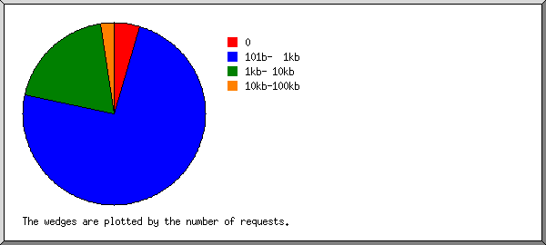
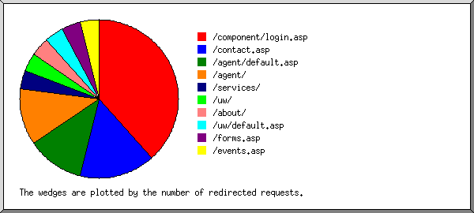
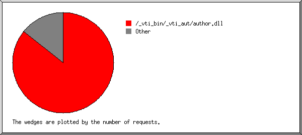

) represents 1 request
for a page.
) represents 1 request
for a page.
(Go To: Top: General Summary: Monthly Report: Daily Summary: Hourly Summary: Failed Referrer Report: Browser Report: Browser Summary: Operating System Report: Status Code Report: File Size Report: Redirection Report: Request Report)
This report contains overall statistics.
(Figures in parentheses refer to the 7-day period ending Nov 30
2003 at 11:59 PM).
Successful requests: 1,026 (91)
Average successful requests per day: 44 (12)
Logfile lines without status code: 15 (0)
Successful requests for pages: 2 (0)
Failed requests: 17 (13)
Redirected requests: 26 (13)
Distinct files requested: 74 (48)
Distinct hosts served: 4 (3)
Corrupt logfile lines: 1
Unwanted logfile entries: 444
Data transferred: 1.539 Mbytes (684.593 kbytes)
Average data transferred per day: 68.632 kbytes (97.799 kbytes)
(Go To: Top: General Summary: Monthly Report: Daily Summary: Hourly Summary: Failed Referrer Report: Browser Report: Browser Summary: Operating System Report: Status Code Report: File Size Report: Redirection Report: Request Report)
This report lists the activity in each month.
Each unit () represents 1 request
for a page.
month: #reqs: #pages: --------: -----: ------: Nov 2003: 1026: 2:Busiest month: Nov 2003 (2 requests for pages).
(Go To: Top: General Summary: Monthly Report: Daily Summary: Hourly Summary: Failed Referrer Report: Browser Report: Browser Summary: Operating System Report: Status Code Report: File Size Report: Redirection Report: Request Report)
This report lists the total activity for each day of the week, summed over all the weeks in the report.
Each unit () represents 1 request
for a page.
day: #reqs: #pages: ---: -----: ------: Sun: 47: 0: Mon: 47: 0: Tue: 0: 0: Wed: 0: 0: Thu: 0: 0: Fri: 0: 0: Sat: 932: 2:
(Go To: Top: General Summary: Monthly Report: Daily Summary: Hourly Summary: Failed Referrer Report: Browser Report: Browser Summary: Operating System Report: Status Code Report: File Size Report: Redirection Report: Request Report)
This report lists the total activity for each hour of the day, summed over all the days in the report.
Each unit () represents 1 request
for a page.
hour: #reqs: #pages: ----: -----: ------: 0: 23: 0: 1: 0: 0: 2: 0: 0: 3: 0: 0: 4: 16: 0: 5: 25: 0: 6: 0: 0: 7: 0: 0: 8: 0: 0: 9: 0: 0: 10: 0: 0: 11: 0: 0: 12: 0: 0: 13: 0: 0: 14: 0: 0: 15: 0: 0: 16: 19: 0: 17: 7: 0: 18: 0: 0: 19: 0: 0: 20: 0: 0: 21: 882: 2:
(Go To: Top: General Summary: Monthly Report: Daily Summary: Hourly Summary: Failed Referrer Report: Browser Report: Browser Summary: Operating System Report: Status Code Report: File Size Report: Redirection Report: Request Report)
This report lists the referrers containing broken links to the site.
Listing referring URLs, sorted by the number of failed requests.
#reqs: URL
-----: ---
8: http://es57045.easystreet.com/agent/UWPage.asp
(Go To: Top: General Summary: Monthly Report: Daily Summary: Hourly Summary: Failed Referrer Report: Browser Report: Browser Summary: Operating System Report: Status Code Report: File Size Report: Redirection Report: Request Report)
This report lists the browsers used by visitors.

Listing browsers, sorted by the number of requests.
#reqs: browser
-----: -------
880: MSFrontPage/4.0
118: Mozilla/4.0 (compatible; MSIE 6.0; Windows 98; .NET CLR 1.0.3705; .NET CLR 1.1.4322)
20: Mozilla/4.0 (compatible; MSIE 6.0; Windows NT 5.0; .NET CLR 1.0.3705; .NET CLR 1.1.4322)
6: Mozilla/4.0 (compatible; MSIE 6.0; Windows NT 5.0)
1: Microsoft Data Access Internet Publishing Provider Cache Manager
1: Mozilla/2.0 (compatible; MS FrontPage 4.0)
(Go To: Top: General Summary: Monthly Report: Daily Summary: Hourly Summary: Failed Referrer Report: Browser Report: Browser Summary: Operating System Report: Status Code Report: File Size Report: Redirection Report: Request Report)
This report lists the vendors of visitors' browsers.

Listing browsers, sorted by the number of requests.
#reqs: browser
-----: -------
880: MSFrontPage
880: MSFrontPage/4
144: MSIE
144: MSIE/6
1: Netscape (compatible)
1: Microsoft Data Access Internet Publishing Provider Cache Manager
(Go To: Top: General Summary: Monthly Report: Daily Summary: Hourly Summary: Failed Referrer Report: Browser Report: Browser Summary: Operating System Report: Status Code Report: File Size Report: Redirection Report: Request Report)
This report lists the operating systems used by visitors.
Listing operating systems, sorted by the number of requests for pages.
#: #reqs: #pages: OS --: -----: ------: -- 1: 882: 2: OS unknown 2: 144: 0: Windows : 118: 0: Windows 98 : 26: 0: Windows 2000
(Go To: Top: General Summary: Monthly Report: Daily Summary: Hourly Summary: Failed Referrer Report: Browser Report: Browser Summary: Operating System Report: Status Code Report: File Size Report: Redirection Report: Request Report)
This report lists the HTTP status codes of all requests.

Listing status codes, sorted numerically.
#reqs: status code
-----: -----------
1000: 200 OK
26: 302 Document found elsewhere
26: 304 Not modified since last retrieval
5: 400 Bad request
1: 404 Document not found
11: 500 Internal server error
(Go To: Top: General Summary: Monthly Report: Daily Summary: Hourly Summary: Failed Referrer Report: Browser Report: Browser Summary: Operating System Report: Status Code Report: File Size Report: Redirection Report: Request Report)
This report lists the sizes of files.

size: #reqs: %bytes:
----------: -----: ------:
0: 48: :
1b- 10b: 0: :
11b- 100b: 0: :
101b- 1kb: 755: 31.87%:
1kb- 10kb: 199: 19.61%:
10kb-100kb: 24: 48.53%:
(Go To: Top: General Summary: Monthly Report: Daily Summary: Hourly Summary: Failed Referrer Report: Browser Report: Browser Summary: Operating System Report: Status Code Report: File Size Report: Redirection Report: Request Report)
This report lists the files that caused requests to be redirected to another file. (Usually directories with the final slash missing, or CGI scripts that forced redirections.)

Listing files, sorted by the number of redirected requests.
#reqs: file
-----: ----
10: /component/login.asp
4: /contact.asp
3: /agent/default.asp
3: /agent/
1: /services/
1: /uw/
1: /about/
1: /uw/default.asp
1: /forms.asp
1: /events.asp
(Go To: Top: General Summary: Monthly Report: Daily Summary: Hourly Summary: Failed Referrer Report: Browser Report: Browser Summary: Operating System Report: Status Code Report: File Size Report: Redirection Report: Request Report)
This report lists the files on the site.

Listing files with at least 20 requests, sorted by the number of requests.
#reqs: %bytes: last time: file -----: ------: ------------------: ---- 879: 45.36%: Nov/22/03 9:47 PM: /_vti_bin/_vti_aut/author.dll 147: 54.64%: Nov/30/03 11:55 PM: [not listed: 67 files]
(Go To: Top: General Summary: Monthly Report: Daily Summary: Hourly Summary: Failed Referrer Report: Browser Report: Browser Summary: Operating System Report: Status Code Report: File Size Report: Redirection Report: Request Report)